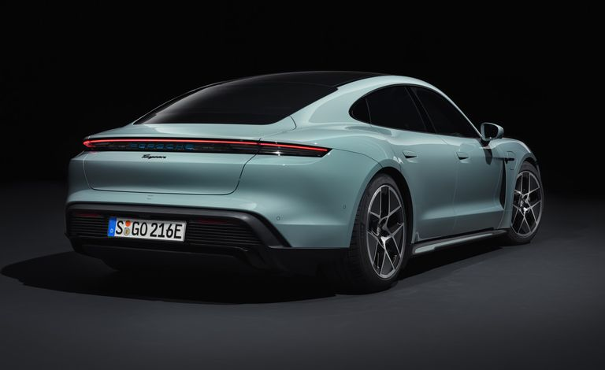
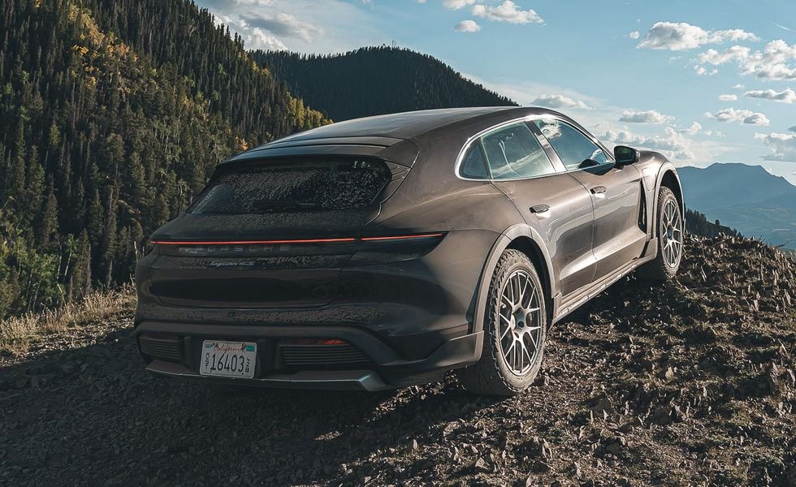
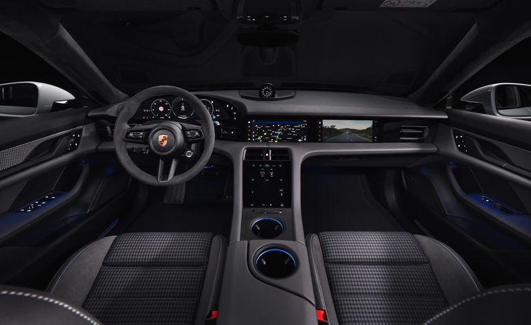

Date of manufacture:November 2024
Engine type:Electric
Wattage:571 hp
Eurostandard:Euro 6
Single charge range (WLTP) [km]:490 km
Battery capacity [kWh]:93.4 kWh
Gearbox:Automatic
Category:Sedan
Mileage [km]:12856 km
Colour:Son
Description:
-
Safety
- Automatic stability control
- Adaptive headlights
- Anti-lock system
- Airbags - Front
- Airbags - Side
- El. Brake force allocation
- Electronic stabilisation programme
- Tyre pressure control
- Parktronic
- ISOFIX system
- Dynamic Resilience System
- Skid protection system
- Brake pad drying system
- Descent control system
- Stop Assist System
-
Comfort
- Bluetooth \ handsfree system
- Steptronic, Tiptronic
- USB, audio\video, IN\AUX pins
- Adaptive air suspension
- Keyless lighting
- Boardcomputer
- Light sensor
- El. Mirrors
- El. Glasses
- El. suspension adjustment
- El. seat adjustment
- El. Steering Wheel Amplifier
- Air conditioning
- Multifunction steering wheel
- Navigation
- Windshield preheating
- Seat heating
- Steering wheel adjustment
- Rain sensor
- Servo steering
- Headlight washing system
- Speed control system (autopilot)
- Stereo
-
Exterior
- 4(5) Doors
- LED headlights
- Xenon headlights
- Alloy wheels
- Metallic
-
Other
- 4x4
- Fully serviced
- With registration
- Service booklet
- Lease
-
Defense
- Alarm
- Casco
- Central locking
-
Interior
- Leather salon
Overview
While numerous EV sedans can thrill you with insane straight-line performance, the 2024 Porsche Taycan blends that same effortless acceleration with sports-car-sharp reflexes. That's why it's a favorite around the Car and Driver office. And this year, the most powerful model packs up to 938 horsepower. The Taycan's four-door layout means you can take friends along for the (wild) ride but the rear seat is snug and there's limited room for cargo, so tell them to pack light. A dashboard full of display screens provides easy access to pertinent info for the driver and front passenger, including reconfigurable gauges and a relatively intuitive infotainment system. Depending on how the car is equipped, it can be fairly spartan or downright luxurious, with a seemingly endless array of personalization options. All this performance and luxe comes at typical Porsche pricing, with the Taycan commanding a premium over rivals such as the Lucid Air and the Tesla Model S—both of which are roomier, more practical, and offer more range per charge. Neither will provide as much joy as the Taycan does on a twisty road though, so to us, it's worth the price and the compromises.
What's New for 2022?
The Taycan receives a mild styling refresh for 2025, which includes subtle updates to the front bumper, headlamps, fenders, and taillights. More significant changes lie under the car's sheetmetal. Folks with range anxiety will be excited to hear that Porsche has made some adjustments in the name of improving DC fast-charging speed. We managed to charge our test car from 8 to 80 percent in just under 17 minutes with a peak charging rate of 327 kW. Porsche has upgraded the batteries, installing an 83.6-kWh pack as standard and offering a Performance battery pack that's 97.0-kWh in capacity—the latter of which is also lighter than the pack it replaces. A new rear-mounted electric motor has shed some pounds too, and Porsche says the new motor is also more efficient. The combination of larger batteries and less curb weight is sure to improve driving range estimates, but we're still waiting on official numbers from the EPA. Porsche has also teased a higher-performance model for 2025 by releasing an image of a winged Taycan—which we think could wear the Turbo GT badge—lapping the Nürburgring. Inside, the infotainment system gains Apple CarPlay+, which places climate controls within the Apple part of the system's interface so you can adjust the temperature without exiting that part of the system. Other infotainment enhancements include better route planning options based on the battery's state of charge. When we find out more specifics about the 2025 Taycan, we'll update this story with details.
EV Motor, Power, and Performance
Except for the base model, which is powered by a single rear-mounted electric motor, all other Taycan models feature dual electric motors, with one powering the front wheels and the other powering the rears. Porsche hasn't released the horsepower rating for most models yet but says the Turbo S makes up to 938 horsepower—but that requires using the car's launch control feature. Without launch control engaged, the electric motors combine for a still-impressive 764 horsepower. We also suspect an even more powerful Turbo GT model is on the way that could exceed 1000 horsepower. All Taycan models also have a two-speed direct-drive transmission that plays a pivotal role in the Taycan's rapid acceleration and excellent range. An air-spring suspension system is standard and all-wheel drive models can be had with adaptive dampers. The Taycan's low-slung driving position, talkative steering and precise handling are what make it special among electric vehicles. And it's comfortable too. Even rolling on 21-inch wheels with low-profile tires, a Taycan Turbo S we drove never felt stiff or harsh. However, we wish it had a more responsive brake pedal, especially since Porsche chose to forgo one-pedal driving.
Fuel Economy and Real-World MPG
The EPA hasn't released fuel-economy estimates for the 2025 Taycan yet, but we're expecting to see some improvement over last year's model. When we get a chance, we'll take the new Taycan on our 75-mph highway fuel economy route and update this story with real-world test results. For more information about the Taycan's fuel economy, visit the EPA's website.
Interior, Comfort, and Cargo
Inside the sleek-looking Taycan is a tech-laden environment. The design is ostensibly simple and recalls what we've seen in other Porsche models. As expected, the interior can be covered in a range of rich materials and color schemes. There's a long list of luxury options, including four-zone climate control, massaging front seats, a heated steering wheel, and heated rear seats. The Taycan comes standard with seats for four, but there's an option to add a third spot in the back if desired—but three-across will be a squeeze. We found the electrified Porsche's rear accommodations and storage space to be a bit lacking, and it takes some maneuvering to get into the low front seat. From behind the wheel, though, the view out is excellent.
Safety and Driver-Assistance Features
Every Taycan is equipped with standard ddriver-assistance technology that includes forward-collision warning and automated emergency braking as well as lane-departure warning and lane-keeping assist. Of course, Porsche also offers more advanced tech for a price. For information about the Taycan's crash-test results, visit the National Highway Traffic Safety Administration (NHTSA) and the Insurance Institute for Highway Safety (IIHS). Key safety features include:
Price:125.000$
| Specification | Details |
|---|---|
| Engine | Electric |
| Horsepower | 562 hp |
| Torque | 479 lb-ft |
| Transmission | 2-speed automatic |
| Acceleration (0-60 mph) | 3.0 seconds |
| Top Speed | 155 mph |
| Range | Up to 227 miles |
| Seating Capacity | 4 passengers |
| Cargo Space | 14.3 cubic feet (front and rear combined) |
If you want to make an inquiry or buy the car, please fill in your personal data
User reviews:
Sarah H
"Absolutely blown away by the 2024 Porsche Taycan! The design is sleek, the performance is electrifying, and the driving experience is unmatched. This car is not just a vehicle; it's a statement. Porsche has truly raised the bar with the Taycan.
James W
As a long-time Porsche enthusiast, I had high expectations for the Taycan, and it did not disappoint. The acceleration is mind-blowing, the handling is precise, and the interior is luxurious. It's a perfect blend of performance and sustainability. Highly recommend!
Emily R.
he Porsche Taycan 2024 exceeded all my expectations! From its futuristic design to its cutting-edge technology, this car is a game-changer. Plus, the all-electric powertrain delivers a smooth and silent ride. It's the future of driving, and I'm here for it!
Alex M
The Porsche Taycan is a masterpiece of engineering. The attention to detail is impeccable, both inside and out. Driving it feels like piloting a spaceship on wheels. It's fast, it's stylish, and it's eco-friendly. What more could you ask for in a luxury electric car?
Jessica L.
I had the opportunity to test drive the Porsche Taycan 2024, and I was left speechless. The performance is unmatched, the handling is agile, and the interior is like stepping into a futuristic lounge. It's not just a car; it's an experience. Porsche has outdone themselves with the Taycan